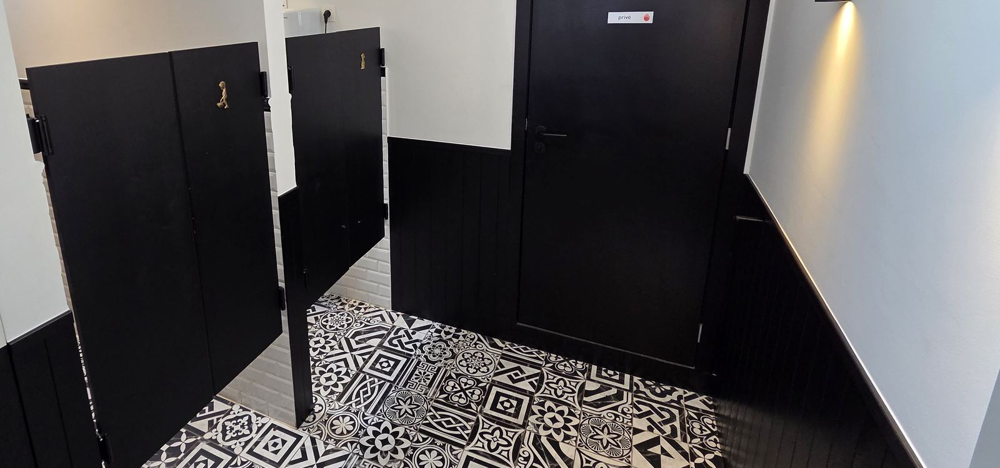
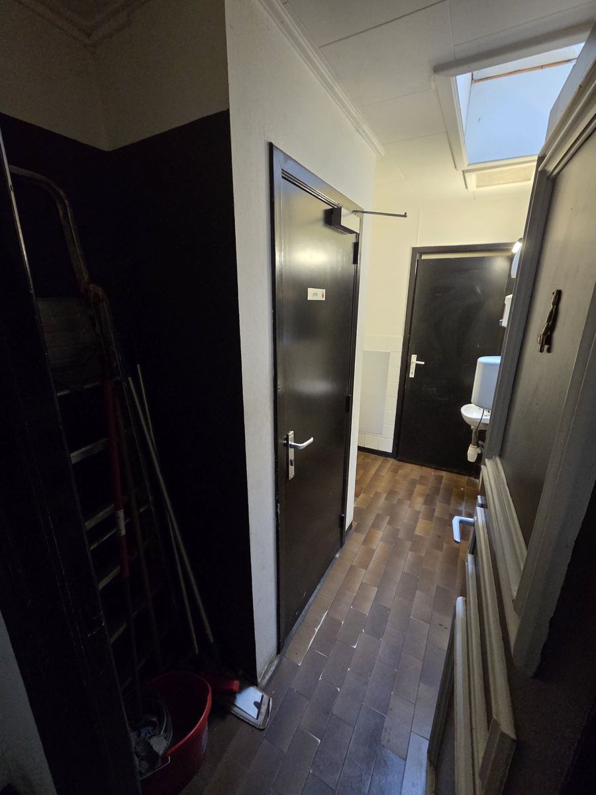
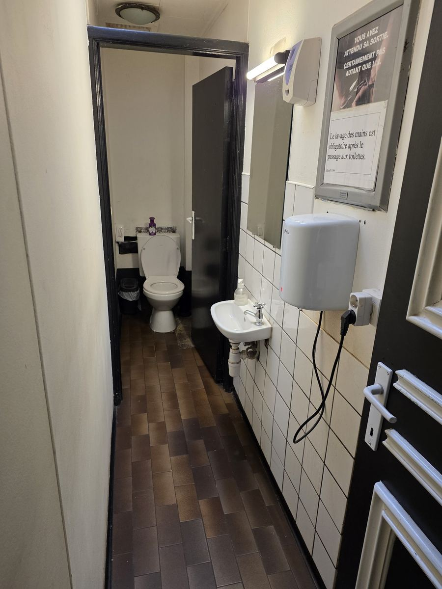
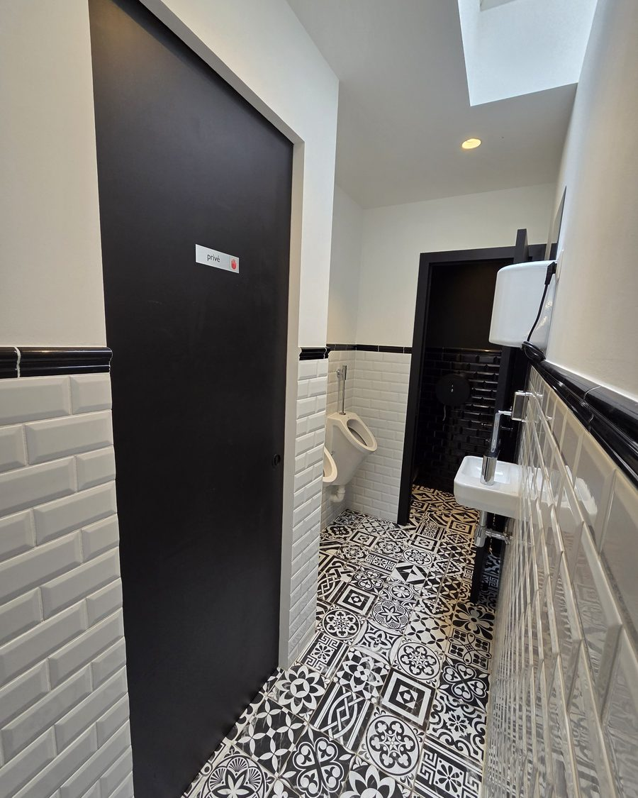
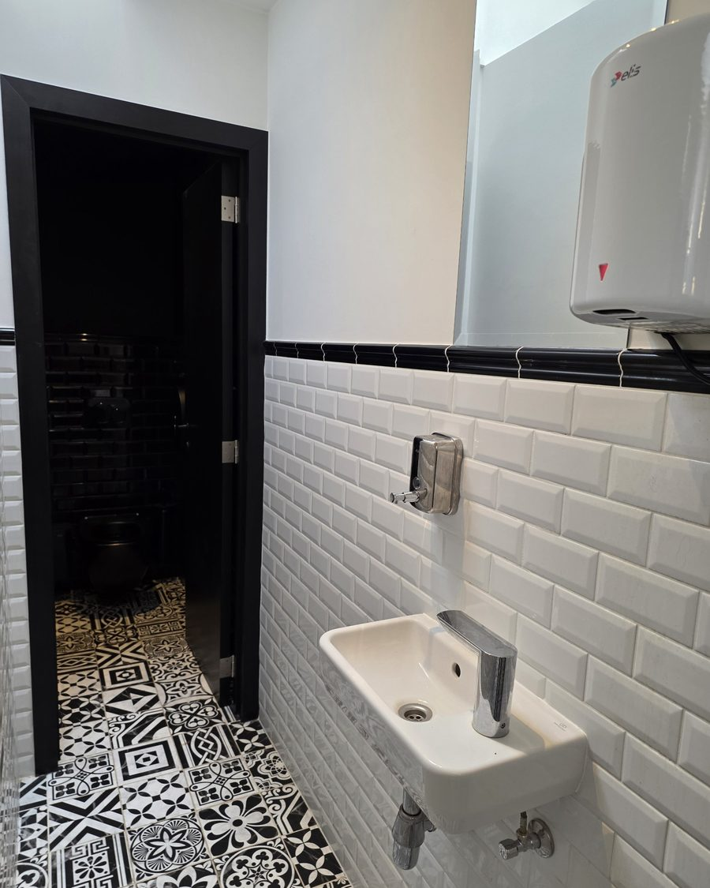

Un verre, une assiette généreuse, et on prend son temps.
- Petite restauration non-stop
- Face à l’église de Wavre
- Jusqu’à 2h le week-end

Un verre, une assiette généreuse, et on prend son temps.



La carte
Petite restauration servie non-stop : les classiques bien faits, et de temps en temps un plat mijoté quand le chef s’y met.
Servie non-stop
Pour l’apéro
De temps en temps, tant qu’il y en a
Le plat du moment est annoncé au bar. Prix en euros, TVA comprise.
Horaires
| Du dimanche au jeudi | jusqu’à 1h |
|---|---|
| Vendredi, samedi et veilles de jours fériés | jusqu’à 2h |
Fermeture du 20 janvier au 12 mars 2027.
Horaires exceptionnels annoncés sur notre fiche Google.
Accès

La rénovation
En janvier 2026, l’arrière de L’Escale a été entièrement refait : couloir, sanitaires, carreaux de ciment noir et blanc, lambris noir, portes battantes et puits de lumière. Le même esprit café d’autrefois, avec des finitions d’aujourd’hui.
Les travaux ont été réalisés par Bien Bâti, entreprise de rénovation basée à Rhode-Saint-Genèse. Prochaine étape en janvier 2027 : la salle avant, le comptoir et la façade.
Avant · début janvier 2026





Après


